# Packages used by this chapter's examples, beyond ggpaintr + ggplot2:
library(dplyr); library(tidyr); library(purrr); library(broom)
library(palmerpenguins); library(plotly); library(ggiraph)
library(ggpcp); library(GGally); library(ggridges); library(ggrepel)
library(ggalluvial); library(ggdist)20 Gallery
This chapter is the recipe book. Every section pairs a plain ggplot2 (or extension-package) graphic an analyst would actually write — shown as real, evaluated output — with the ptr_app() formula that exposes its knobs, shown verbatim with a screenshot of the running app. The originals run as ordinary R at render time; the app versions are bound to tested fixtures like everywhere else in this book.
The custom placeholders used along the way (ppRange, ppVars, ppPercent) are defined inline so every example is self-contained; Chapter 6 explains the constructor machinery behind them.
20.1 A realistic ggplot2 graphic, parameterized
A typical exploratory plot stacks several layers and reads several hard-coded constants. Here is a multi-layer fuel-economy chart from the mpg dataset:
library(ggplot2)
ggplot(mpg, aes(displ, hwy, color = class)) +
geom_point(alpha = 0.6, size = 2) +
geom_smooth(method = "loess", se = FALSE, span = 0.75) +
facet_wrap(~ drv) +
scale_color_brewer(palette = "Set2") +
labs(title = "Highway MPG vs engine displacement",
x = "Engine displacement (L)", y = "Highway MPG") +
coord_cartesian(xlim = c(1, 7), ylim = c(10, 45))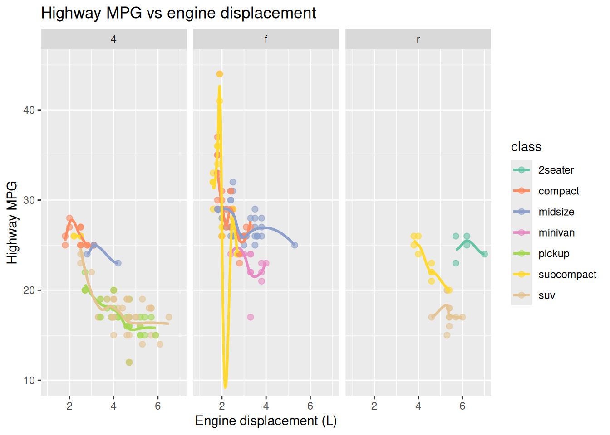
Now replace each tuning knob with a placeholder. The columns become pickers, the labels become text inputs, the y-range becomes a slider backed by a small custom value placeholder, ppRange, defined right in the chunk. Its length-2 default is validated by the package’s own ptr_arg_numeric(vector = TRUE, length = 2L), which constant-folds a literal like c(10, 45) without evaluating arbitrary code:
ppRange <- ptr_define_placeholder_value(
keyword = "ppRange",
build_ui = function(node, label = NULL, selected = NULL, ...) {
v <- suppressWarnings(as.numeric(selected))
initial <- if (length(v) == 2L && all(is.finite(v))) v else c(0, 50)
shiny::sliderInput(node$id, label = label %||% "Range",
min = -100, max = 100, value = initial, step = 1)
},
resolve_expr = function(value, node, ...) {
if (is.null(value) || length(value) != 2L) return(NULL)
rlang::expr(c(!!value[1], !!value[2]))
},
ui_text_defaults = list(label = "Range for {param}"),
parse_positional_arg = ptr_arg_numeric(vector = TRUE, length = 2L)
)
{
ggplot(mpg, aes(ppVar(displ), ppVar(hwy), color = ppVar(class))) +
geom_point(alpha = 0.6, size = 2) +
geom_smooth(method = ppText("loess"), se = FALSE, span = 0.75) +
ppLayerOff(facet_wrap(~ ppVar(drv)), FALSE) +
scale_color_brewer(palette = "Set2") +
labs(title = "Highway MPG vs engine displacement",
x = ppText("Engine displacement (L)"), y = ppText("Highway MPG")) +
coord_cartesian(xlim = ppExpr(c(1, 7)), ylim = ppRange(c(10, 45)))
} |>
ptr_app()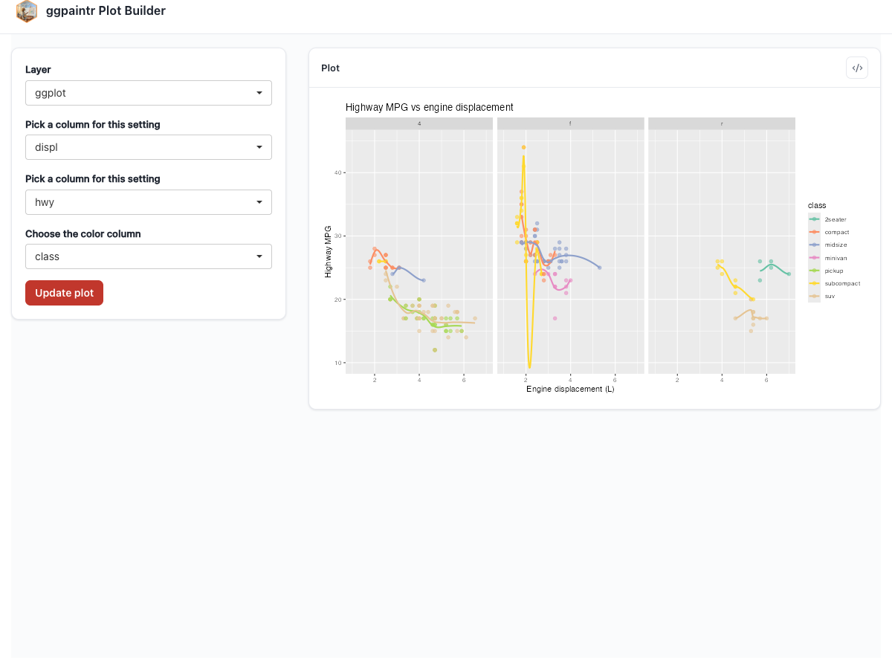
Rebuilding the original graphic from the running app is a matter of picking those values; the code window lifts the selections back into a static script (Chapter 5).
20.2 Data-cleaning pipelines into ggplot()
ggpaintr’s formula grammar is a single ggplot() call plus + layers, and that covers the common “clean, then plot” pipeline: stages piped into ggplot() are lifted into the app when the lift gates pass — at least one stage, a lossless round-trip of the split, and a source that is a bare symbol (or a source-role placeholder like ppUpload). Pipeline stages with placeholders get the per-layer Data subtab described in Chapter 4.
20.2.1 Filter, group, and plot
library(dplyr)
mpg |>
dplyr::filter(displ > 1.5) |>
dplyr::group_by(class) |>
dplyr::filter(dplyr::n() > 5) |>
dplyr::ungroup() |>
ggplot(aes(displ, hwy, color = class)) +
geom_point(alpha = 0.5)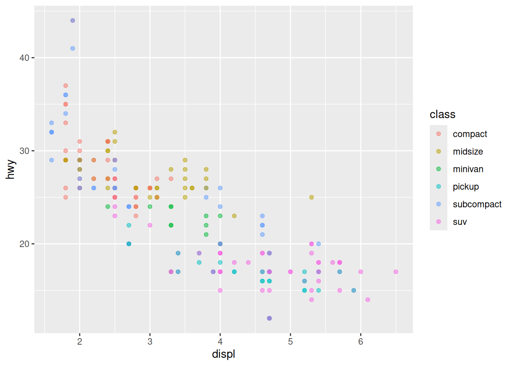
The same pipeline parameterized — thresholds, grouping column, and aesthetics become widgets:
ptr_app(
mpg |>
dplyr::filter(ppVar(displ) > ppNum(1.5)) |>
dplyr::group_by(ppVar(class)) |>
dplyr::filter(ppExpr(dplyr::n() > 5)) |>
dplyr::ungroup() |>
ggplot(aes(ppVar(displ), ppVar(hwy), color = ppVar(class))) +
geom_point(alpha = 0.5)
)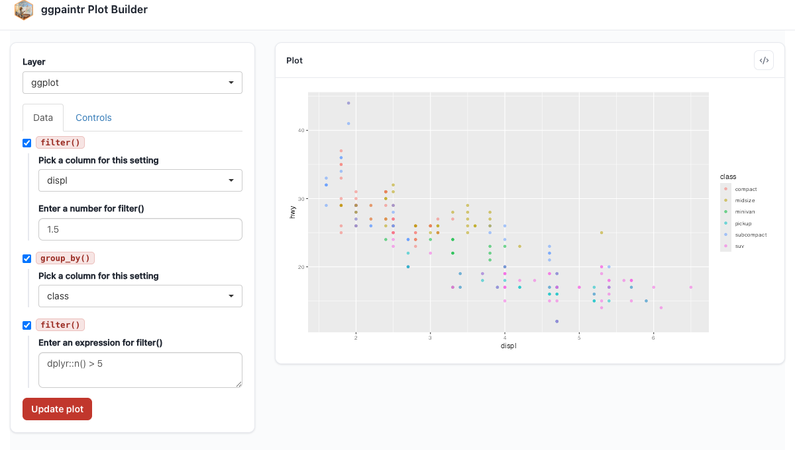
20.2.2 PCA scores with 95% confidence ellipses
A classic exploratory move — project numeric columns onto their first two principal components, colour by a grouping factor, overlay confidence ellipses. The do_pca() helper keeps the lambda out of the pipe — a lambda stage would still run in the generated code, but it is silently inert in the UI: no stage row or toggle, and any placeholder inside it is ignored (Chapter 4):
library(broom)
do_pca <- function(d, cols) {
broom::augment(prcomp(d[, cols], scale. = TRUE), d)
}
iris |>
do_pca(c("Sepal.Length", "Sepal.Width", "Petal.Length", "Petal.Width")) |>
ggplot(aes(.fittedPC1, .fittedPC2, color = Species)) +
stat_ellipse(level = 0.95, linewidth = 0.8) +
geom_point(alpha = 0.8, size = 2) +
scale_color_brewer(palette = "Dark2") +
labs(title = "Iris in PC space, with 95% ellipses",
x = "PC1", y = "PC2") +
theme_minimal() +
theme(legend.position = "bottom")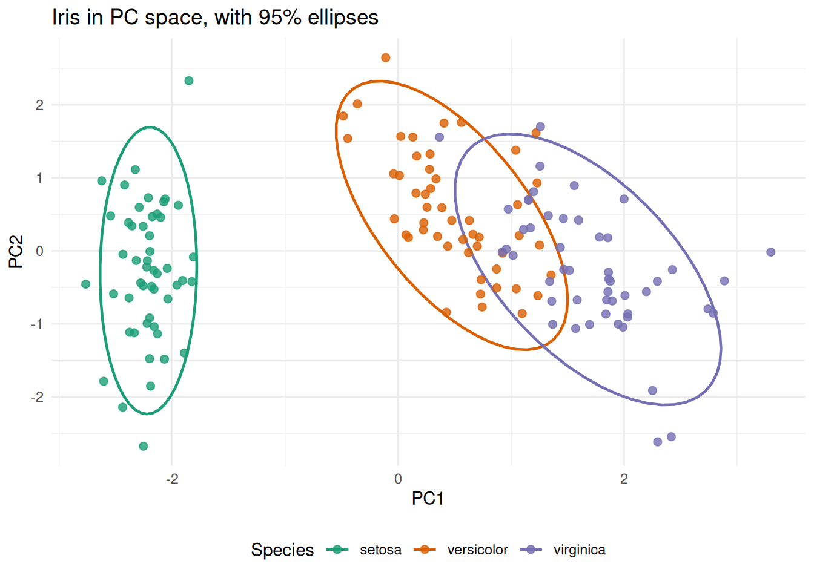
The app version adds a multi-column picker — a custom consumer placeholder, ppVars, that resolves its choices against the upstream data — plus an upload head and a toggleable drop_na() stage:
ppVars <- ptr_define_placeholder_consumer(
keyword = "ppVars",
build_ui = function(node, cols, data, label = NULL, selected = NULL, ...) {
retained <- intersect(selected %||% character(0), cols)
shiny::selectInput(node$id, label = label %||% "Columns",
choices = cols, selected = retained,
multiple = TRUE)
},
resolve_expr = function(value, node, ...) {
if (length(value) == 0L) return(NULL)
rlang::call2("c", !!!as.list(value))
},
validate_session_input = function(value, ctx) {
bad <- setdiff(value, ctx$upstream_cols)
if (length(bad) == 0L) TRUE
else paste0("Not in upstream data: ", paste(bad, collapse = ", "))
},
ui_text_defaults = list(label = "Columns for {param}"),
parse_positional_arg = ptr_arg_string(vector = TRUE)
)
do_pca <- function(d, cols) {
broom::augment(prcomp(d[, cols], scale. = TRUE), d)
}
{ppUpload(iris) |>
ppVerbSwitch(drop_na(), FALSE) |>
do_pca(ppVars(c("Sepal.Length", "Sepal.Width", "Petal.Length", "Petal.Width"))) |>
ggplot(aes(ppVar(.fittedPC1), ppVar(.fittedPC2), color = ppVar(Species))) +
stat_ellipse(level = 0.95, linewidth = 0.8) +
geom_point(alpha = 0.8, size = 2) +
scale_color_brewer(palette = "Dark2") +
labs(title = "Iris in PC space, with 95% ellipses",
x = "PC1", y = "PC2") +
theme_minimal() +
theme(legend.position = "bottom")} |>
ptr_app()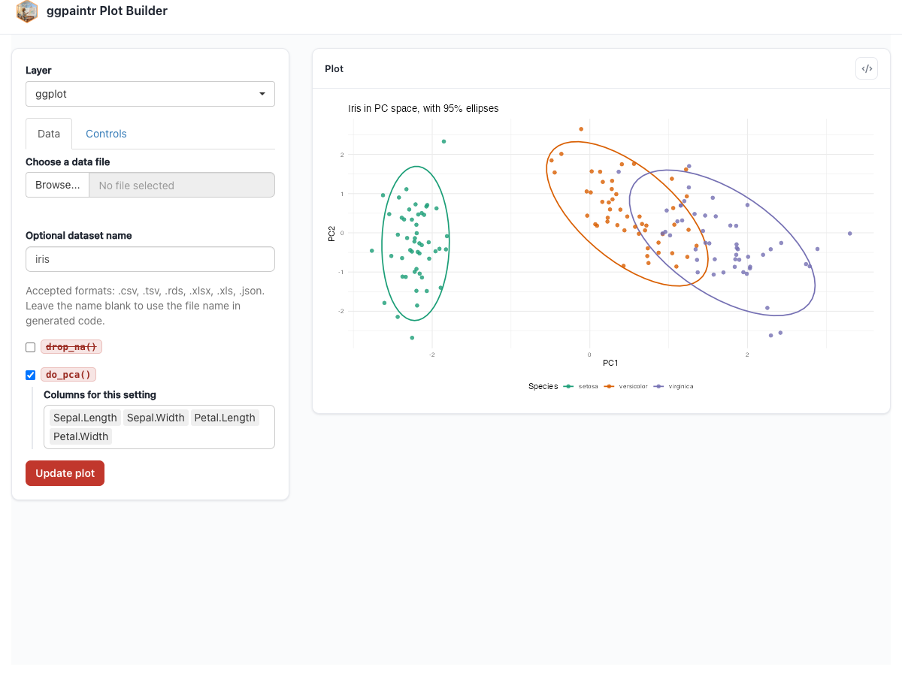
drop_na() stage. The axis pickers list the augmented frame’s .fittedPC* columns.20.2.3 K-means elbow plot
Map kmeans() over a range of k, glance for tot.withinss, plot the elbow. This one stays static here: its natural parameterization (the cluster range driving both the data step and the x-axis breaks) uses a shared placeholder, covered in Chapter 11.
library(tidyr)
library(purrr)
tibble(k = 1:9) |>
mutate(
kmeans = map(k, function(.k) kmeans(
scale(iris[, c("Sepal.Length", "Sepal.Width",
"Petal.Length", "Petal.Width")]),
centers = .k, nstart = 25)),
glanced = map(kmeans, broom::glance)
) |>
unnest(glanced) |>
ggplot(aes(k, tot.withinss)) +
geom_line(color = "gray50") +
geom_point(size = 3, color = "#0072B2") +
scale_x_continuous(breaks = 1:9) +
labs(title = "Elbow plot for k-means on iris",
x = "Number of clusters", y = "Total within-cluster SS") +
theme_minimal()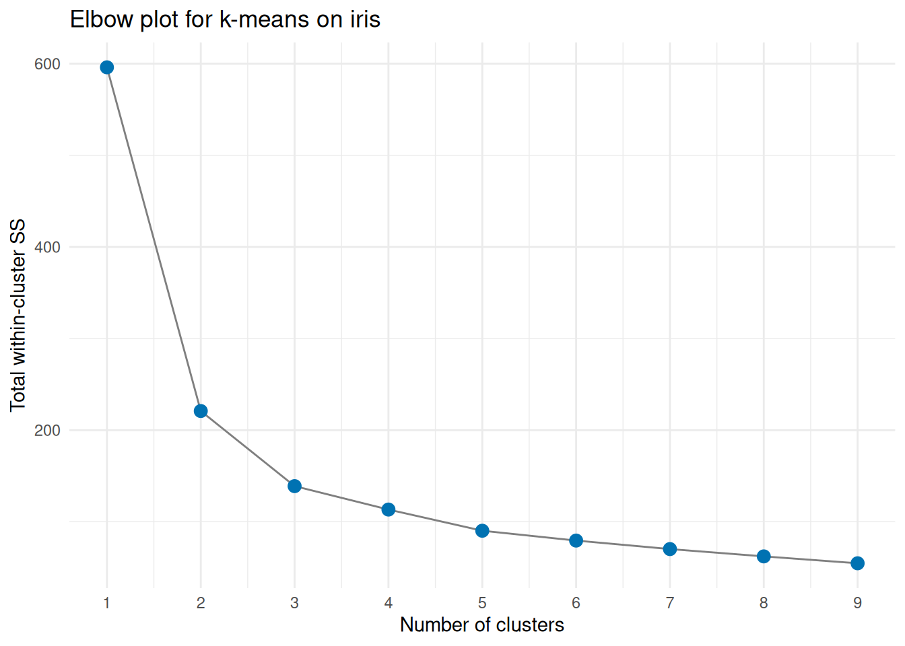
20.2.4 Regression diagnostics
broom::augment() turns an lm fit into a tidy frame whose .fitted, .resid, .hat, .std.resid, and .cooksd columns are the staples of regression diagnostics:
broom::augment(lm(mpg ~ wt + cyl + hp, data = mtcars)) |>
ggplot(aes(.fitted, .resid)) +
geom_hline(yintercept = 0, color = "gray60", linetype = 2) +
geom_point(alpha = 0.7, size = 2.5, color = "#D55E00") +
geom_smooth(method = "loess", se = FALSE, span = 0.75) +
labs(title = "Residuals vs fitted (mpg ~ wt + cyl + hp)",
x = "Fitted", y = "Residual") +
theme_minimal()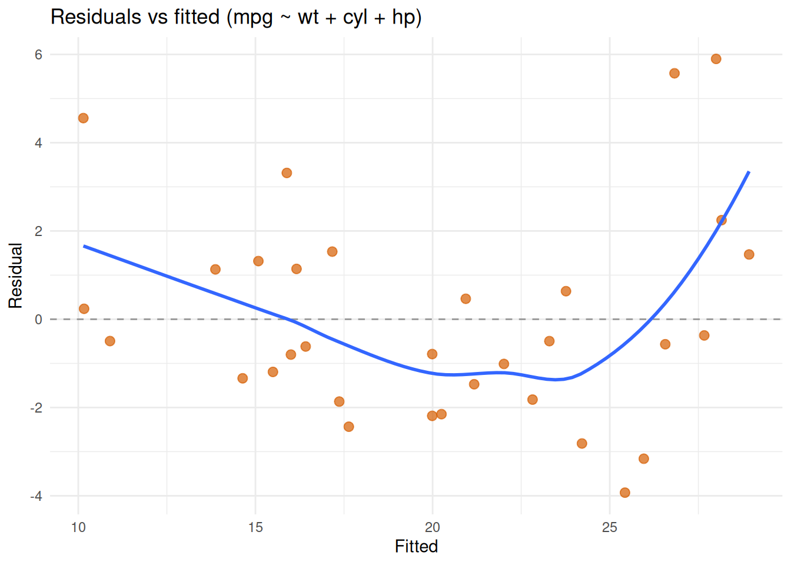
The app version swaps the data for an upload widget and the smoother for a text input:
{broom::augment(lm(mpg ~ wt + cyl + hp, data = ppUpload(mtcars))) |>
ggplot(aes(.fitted, .resid)) +
geom_hline(yintercept = 0, color = "gray60", linetype = 2) +
geom_point(alpha = 0.7, size = 2.5, color = "#D55E00") +
geom_smooth(method = ppText("loess"), se = FALSE, span = 0.75) +
labs(title = "Residuals vs fitted (mpg ~ wt + cyl + hp)",
x = "Fitted", y = "Residual") +
theme_minimal()} |>
ptr_app()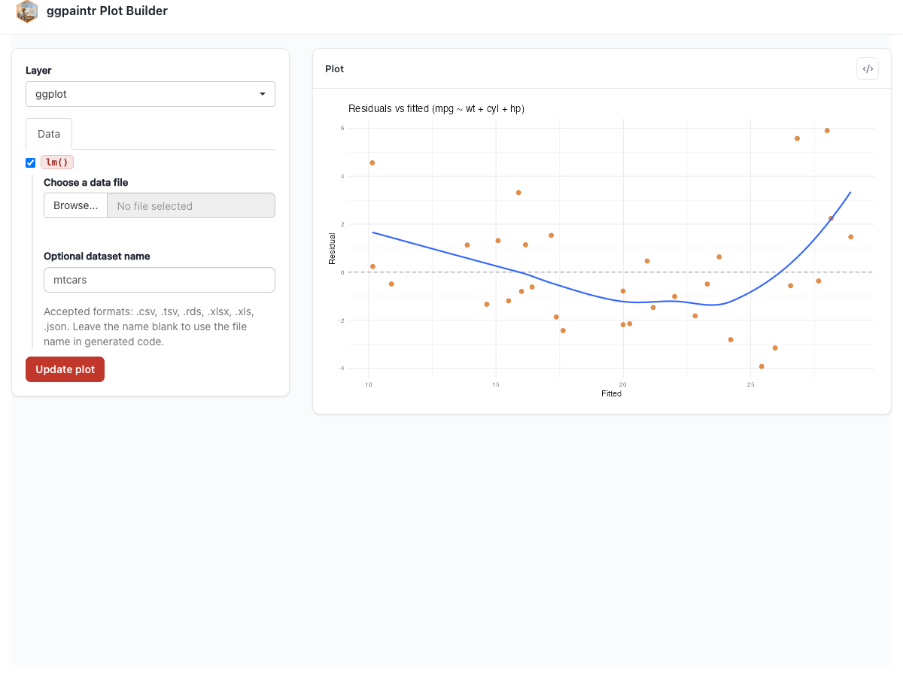
Going one step further, the model formula itself becomes a ppExpr widget, so the user can swap responses and predictors at will:
{broom::augment(lm(ppExpr(Sepal.Length ~ Sepal.Width + Petal.Length), data = ppUpload(iris))) |>
ggplot(aes(.fitted, .resid)) +
geom_hline(yintercept = ppExpr(0), color = "gray60", linetype = 2) +
geom_point(alpha = 0.7, size = 2.5, color = "#D55E00") +
geom_smooth(method = ppText("loess"), se = FALSE, span = 0.75) +
labs(title = "Residuals vs fitted (user-chosen model on iris)",
x = "Fitted", y = "Residual") +
theme_minimal()} |>
ptr_app()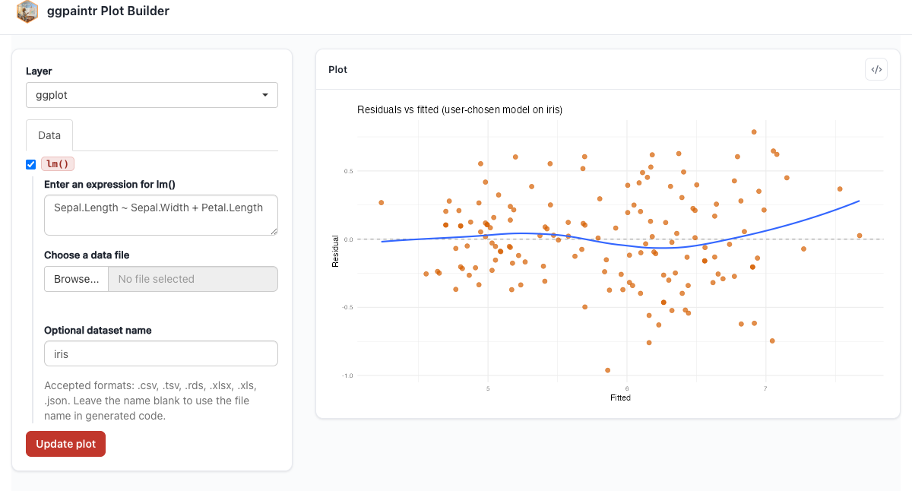
Petal.Width ~ . and the diagnostics redraw for the new fit.20.2.5 Rolling time-series
economics (ships with ggplot2) holds 40+ years of monthly US macro indicators. The standard recipe — pick a series, overlay an n-month rolling mean:
roll_mean <- function(x, n) {
as.numeric(stats::filter(x, rep(1 / n, n), sides = 1))
}
economics |>
mutate(roll = roll_mean(unemploy, 12)) |>
ggplot(aes(date, unemploy)) +
geom_line(color = "gray70") +
geom_line(aes(y = roll), color = "#0072B2", linewidth = 1) +
labs(title = "US unemployment with 12-month rolling mean",
x = NULL, y = "Persons (thousands)") +
theme_minimal()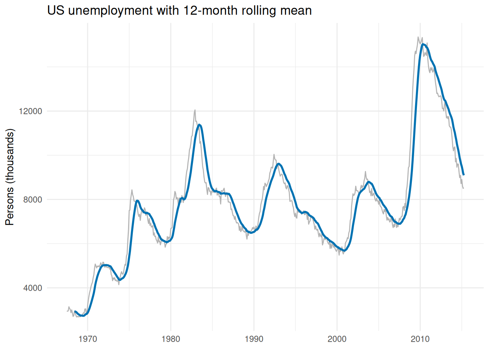
Parameterized, the series and the window size become widgets:
roll_mean <- function(x, n) {
as.numeric(stats::filter(x, rep(1 / n, n), sides = 1))
}
{economics |>
mutate(roll = roll_mean(ppVar(unemploy), ppNum(12))) |>
ggplot(aes(date, ppVar(unemploy))) +
geom_line(color = "gray70") +
geom_line(aes(y = roll), color = "#0072B2", linewidth = 1) +
labs(title = "US unemployment with 12-month rolling mean",
x = NULL, y = "Persons (thousands)") +
theme_minimal()} |>
ptr_app()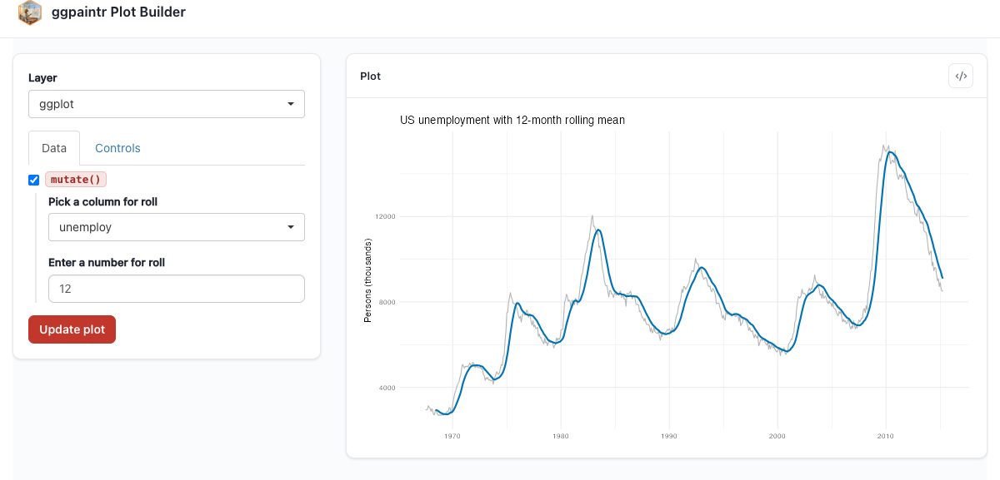
20.2.6 Group-wise regression coefficients
Nest by a grouping factor, fit one lm per group, tidy the coefficients with confidence intervals, plot as a forest. Static here — its parameterization is a good exercise once you have read Chapter 6:
library(palmerpenguins)
penguins |>
tidyr::drop_na(bill_depth_mm, bill_length_mm) |>
group_by(species) |>
tidyr::nest() |>
mutate(
fit = map(data, function(.d) lm(bill_depth_mm ~ bill_length_mm, data = .d)),
tidy = map(fit, function(.f) broom::tidy(.f, conf.int = TRUE))
) |>
unnest(tidy) |>
filter(term == "bill_length_mm") |>
ggplot(aes(estimate, species, color = species)) +
geom_vline(xintercept = 0, color = "gray60", linetype = 2) +
geom_pointrange(aes(xmin = conf.low, xmax = conf.high), size = 0.8) +
scale_color_brewer(palette = "Dark2") +
labs(title = "Slope of bill depth ~ bill length, by species",
x = "Estimate (95% CI)", y = NULL) +
theme_minimal() +
theme(legend.position = "none")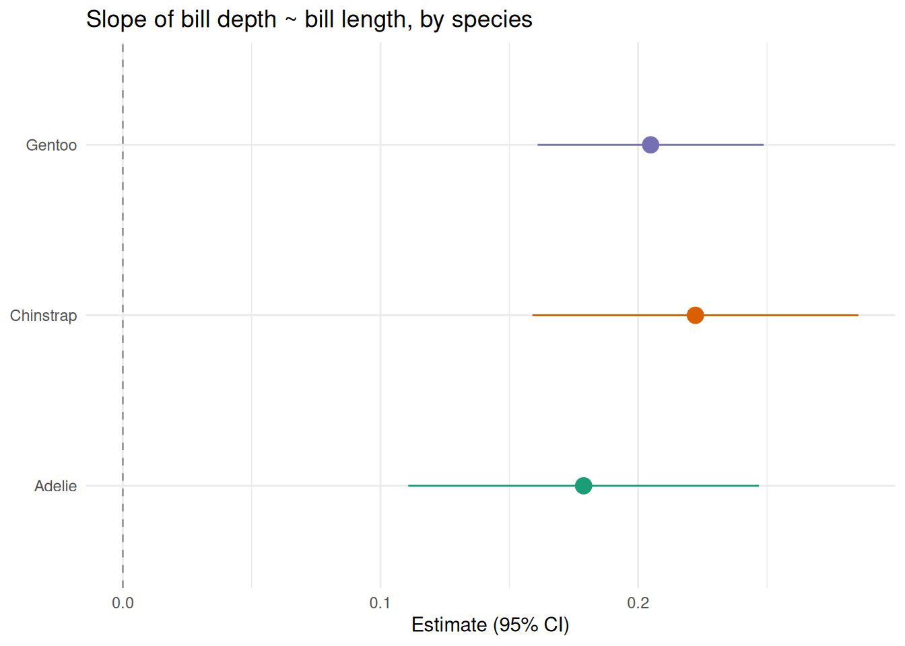
20.3 Interactive output packages
ggpaintr’s default renderer is a static plot pane, but the plot object it builds is an ordinary ggplot — anything that consumes a ggplot can render it. The two examples below show the original interactive graphics; wiring a ggpaintr app to drive them requires owning the renderer, which is exactly the L3 pattern in Chapter 13 — that chapter’s worked examples are these two plots.
20.3.1 plotly tooltips
library(plotly)
p <- ggplot(mpg, aes(displ, hwy, color = class,
text = paste(manufacturer, model, sep = " "))) +
geom_point(size = 3, alpha = 0.7) +
coord_cartesian(xlim = c(1, 7), ylim = c(10, 45))
plotly::ggplotly(p, tooltip = "text")20.3.2 ggiraph tooltips
library(ggiraph)
gg <- ggplot(mpg, aes(displ, hwy)) +
geom_point_interactive(aes(tooltip = model), size = 3, color = "#e63946")
girafe(ggobj = gg)20.4 ggplot2 extension packages
ggpaintr does not know about extension geoms — it sees them as ordinary layer calls and parameterizes their arguments the same way it parameterizes core geoms.
20.4.1 ggpcp — parallel coordinates
library(ggpcp)
data(flea, package = "GGally")
flea |>
pcp_select(species, tars1, tars2, head, aede1, aede2, aede3) |>
pcp_scale(method = "uniminmax") |>
pcp_arrange() |>
ggplot(aes_pcp()) +
geom_pcp_axes() +
geom_pcp(aes(colour = species))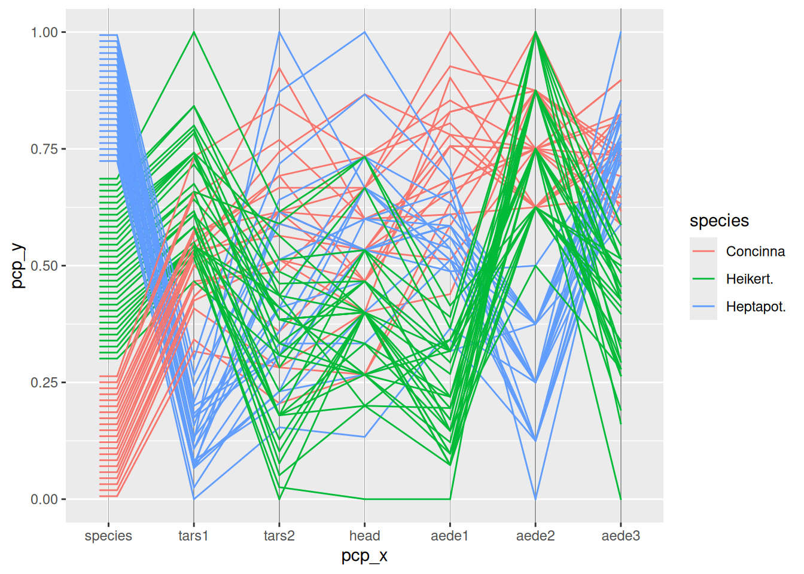
The app version lets the user pick which columns go on the parallel axes, reusing the ppVars consumer from the PCA example:
ppVars <- ptr_define_placeholder_consumer(
keyword = "ppVars",
build_ui = function(node, cols, data, label = NULL, selected = NULL, ...) {
retained <- intersect(selected %||% character(0), cols)
shiny::selectInput(node$id, label = label %||% "Columns",
choices = cols, selected = retained,
multiple = TRUE)
},
resolve_expr = function(value, node, ...) {
if (length(value) == 0L) return(NULL)
rlang::call2("c", !!!as.list(value))
},
validate_session_input = function(value, ctx) {
bad <- setdiff(value, ctx$upstream_cols)
if (length(bad) == 0L) TRUE
else paste0("Not in upstream data: ", paste(bad, collapse = ", "))
},
ui_text_defaults = list(label = "Columns for {param}"),
parse_positional_arg = ptr_arg_string(vector = TRUE)
)
{ppUpload(flea) |>
pcp_select(ppVars(c("species", "tars1", "tars2", "head", "aede1", "aede2", "aede3"))) |>
pcp_scale(method = "uniminmax") |>
pcp_arrange() |>
ggplot(aes_pcp()) +
geom_pcp_axes() +
geom_pcp(aes(colour = ppVar(species)))} |>
ptr_app()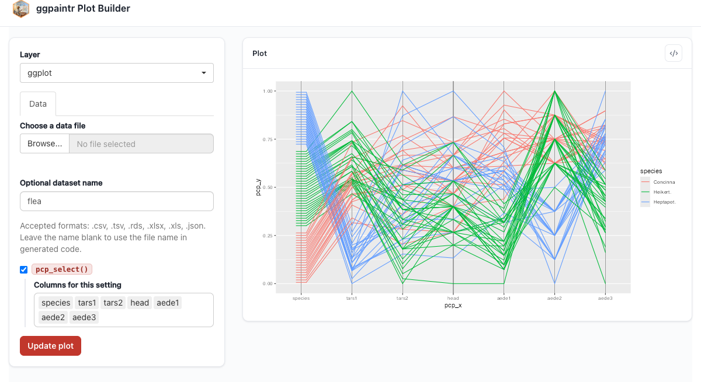
20.4.2 ggridges — ridge densities
library(ggridges)
ggplot(lincoln_weather,
aes(x = `Mean Temperature [F]`, y = Month, fill = after_stat(x))) +
geom_density_ridges_gradient(scale = 3, rel_min_height = 0.01,
bandwidth = 3) +
scale_fill_viridis_c(option = "C")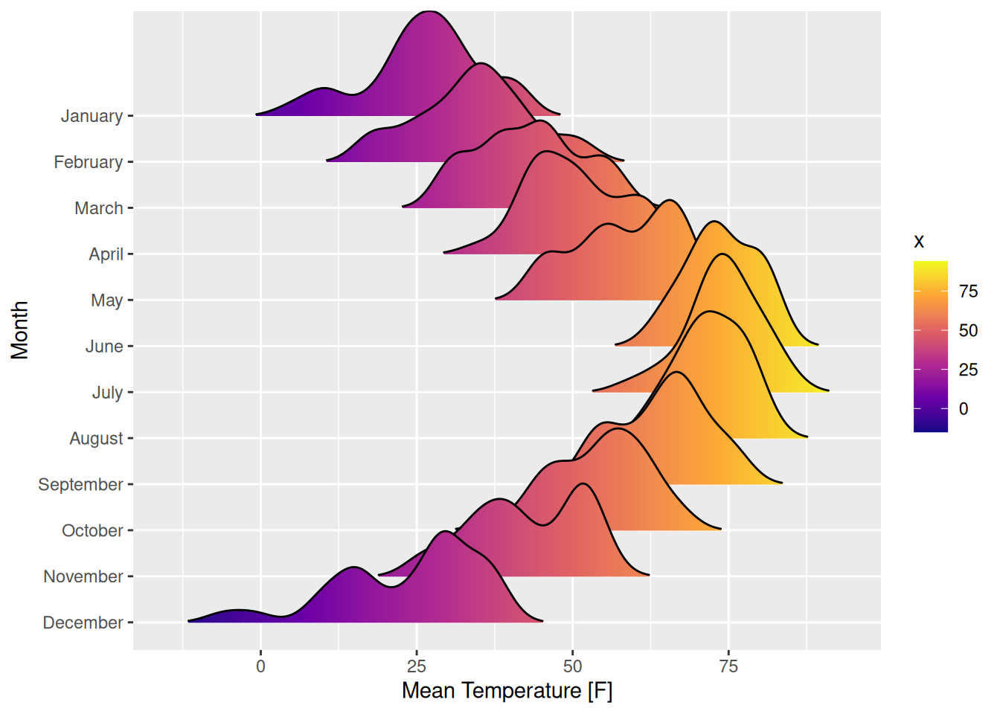
lincoln_weather ships with non-syntactic column names (Mean Temperature [F], …), so a parameterized version needs ptr_normalize_column_names() first — the recipe is in Chapter 2.
20.4.3 ggrepel — labelled scatter
library(ggrepel)
mt <- data.frame(mtcars, model = rownames(mtcars))
ggplot(mt, aes(wt, mpg, label = model)) +
geom_point(size = 3, color = "steelblue") +
geom_text_repel(size = 3.5, max.overlaps = 12, box.padding = 0.3)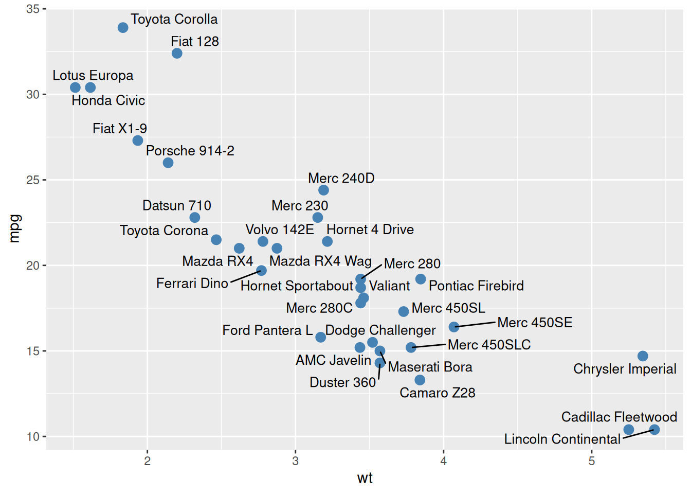
20.4.4 ggalluvial — flow diagrams
library(ggalluvial)
ggplot(vaccinations,
aes(x = survey, stratum = response, alluvium = subject,
y = freq, fill = response)) +
geom_flow(alpha = 0.7) +
geom_stratum() +
scale_x_discrete(expand = c(0.1, 0.1))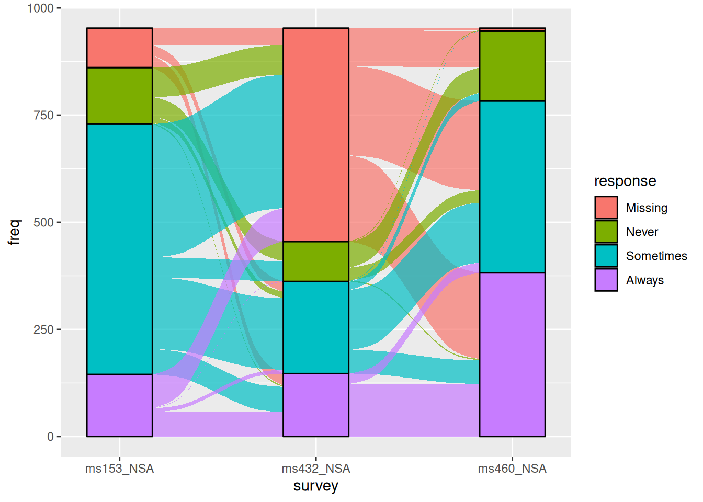
20.4.5 ggdist — distribution visualizations
library(ggdist)
ggplot(mtcars, aes(x = factor(cyl), y = mpg)) +
stat_halfeye(adjust = 0.5, justification = -0.2,
.width = 0, point_colour = NA, slab_alpha = 0.6) +
geom_boxplot(width = 0.15, outlier.shape = NA) +
coord_flip()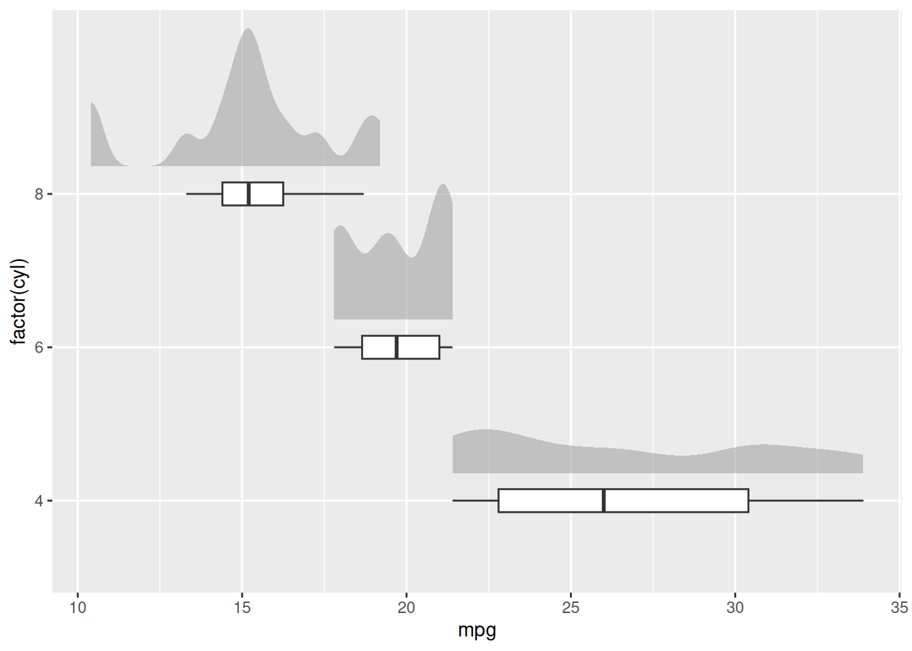
For the parameterized flavour of this family, here is a complete custom value placeholder: ppPercent renders a 0–100 slider and folds back the value divided by 100 — a friendlier alpha control than a raw decimal:
ppPercent <- ptr_define_placeholder_value(
keyword = "ppPercent",
build_ui = function(node, label = NULL, selected = NULL,
named_args = list(), ...) {
step <- named_args$step %||% 1
shiny::sliderInput(
node$id, label = label %||% "Percent",
min = 0, max = 100,
value = selected,
step = step
)
},
resolve_expr = function(value, node, ...) {
if (is.null(value)) return(NULL)
as.numeric(value) / 100
},
validate_session_input = function(value, ctx) {
v <- suppressWarnings(as.numeric(value))
if (length(v) != 1L || is.na(v) || v < 0 || v > 100) {
rlang::abort("Percent must be a single number between 0 and 100.")
}
TRUE
},
parse_positional_arg = ptr_arg_numeric(),
parse_named_args = list(step = ptr_arg_numeric()),
embellish_eval = function(x, ...) as.numeric(x) / 100,
ui_text_defaults = list(label = "Percent for {param}")
)
ptr_app(
ggplot(mtcars, aes(x = ppVar("wt"), y = ppVar("mpg"))) +
geom_point(alpha = ppPercent(40, step = 5))
)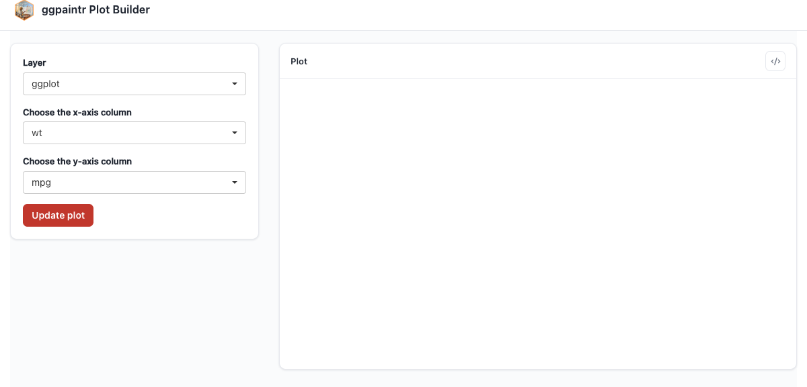
ppPercent(40, step = 5): the slider boots at 40, steps by 5, and the generated code reads alpha = 0.4.20.5 Where to go next
- The three-level ladder (all-in-one app → embed → own the layout): Chapter 1, Chapter 9, Chapter 12.
- The shared-placeholder pattern (one widget driving several plots, or several spots in one formula): Chapter 11.
- The custom-placeholder constructors used throughout this gallery, with the full hook contract: Chapter 8.
- Driving plotly / ggiraph from a ggpaintr app — the interactive versions of § “Interactive output packages”: Chapter 13.
- The safety model behind
ppExprandppUpload: Chapter 18.